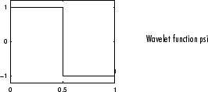
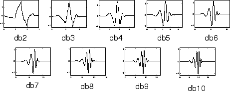
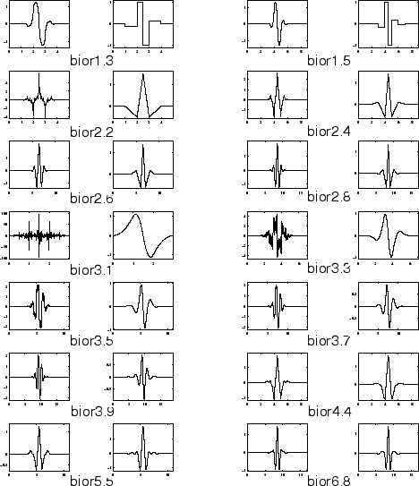
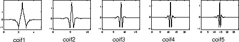
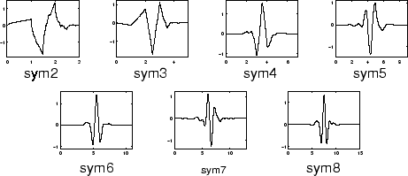
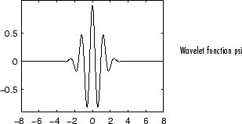
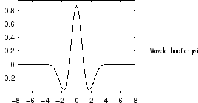
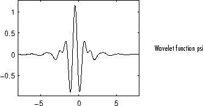

Notable Families of Wavelets
| Haar Wavelet |
 The Harr Wavelet is discontinuous, and resembles a step function. |
|---|---|
| Daubechies Wavelet |
 The Daubechies Wavelets are compactly supported orthonormal wavelets. |
| Biorthogonal Wavelet |
 The Biorthogonal Wavelets exhibit the property of linear phase, used for signal and image reconstruction. |
| Coiflet |
 |
| Symlet |
 Symlets are nearly symmetrical wavelets proposed by Daubechies as modifications to the Daubechies Wavelet family. |
| Morlet Wavelet |
 The Morlet wavelet has no scaling function, but is explicit. |
| Mexican Hat Wavelet |
 The Mexican Hat wavelet has no scaling function and is derived from a function that is proportional to the second derivative function of the Gaussian pdf. |
| Meyer Wavelet |
 The Meyer wavelet and scaling function are defined in the frequency domain. |